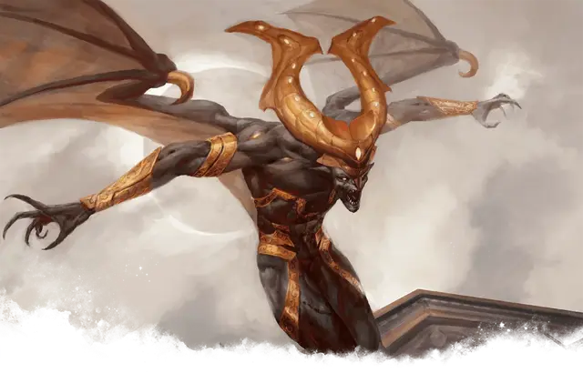

Пожиратель надежды
Eater of Hope
Большое Исчадие, законно-злое

Класс Доспеха 17 (природный доспех)
Хиты 90 (12к10 + 24)
Скорость 30 футов, летая 60 футов
| мод | спас | ||
|---|---|---|---|
| СИЛ | 19 | +4 | +4 |
| ЛОВ | 17 | +3 | +3 |
| ТЕЛ | 14 | +2 | +5 |
| мод | спас | ||
|---|---|---|---|
| ИНТ | 12 | +1 | +1 |
| МДР | 11 | +0 | +0 |
| ХАР | 16 | +3 | +6 |
Навыки Запугивание +6, Обман +6, Убеждение +6
Сопротивление урону некротическая энергия, холод
Иммунитет к урону яд
Иммунитет к состояниям отравление
Чувства тёмное зрение 120 футов, пассивное Восприятие 10
Языки Общий, Бездны, Инфернальный
Опасность 6 (2300 опыта)
Бонус мастерства +3
Особенности
Сопротивление магии. Пожиратель надежды совершает с преимуществом спасброски от заклинаний и прочих магических эффектов.
Ненасытная жадность. Пожиратель надежды может ощущать присутствие золота в пределах 1000 футов от себя. Он может определить, в каком месте находится наибольшее количество золота, и может определить направление к этому месту. Если золото перемещается, он знает направление движения. Он не может обнаружить золото, если любая толщина глины или свинца, даже тонкого листа, блокирует прямой путь между ним и золотом.
Действия
Мультиатака. Пожиратель надежды совершает две атаки своими когтями.
Когти. . Рукопашная атака оружием: +7 к попаданию, досягаемость 5 футов, одна цель. Попадание: 8 (1к8 + 4) рубящего урона плюс 7 (2к6) урона некротической энергией.
Дыхание безнадежности (Перезарядка 5-6). Пожиратель надежды выдыхает миазмы ветров Подземного царства в виде 30-футового конуса. Каждое существо в этой области должно совершить спасбросок Харизмы Сл 14. При провале цель получает 26 (4к12) урона некротической энергией и становится проклятой на 1 минуту. Будучи проклятой таким образом, цель дополнительно получает 6 (1к12) урона некротической энергией всякий раз, когда пожиратель надежды попадает по ней атакой. При успехе цель получает половину этого урона и не проклинается.
Описание
Пожиратель надежды ожесточен до глубины души, ненавидит на все формы жизни и радости. Хотя эти демоны могут сразить большинство врагов, они предпочитают позволить ужасу и отчаянию сначала овладеть их жертвами, позволяя своим жертвам мариноваться в страхе, прежде чем дьявол пожрет их.
Сплетение желаний. Будучи одержимыми богатством и доминируя над низшими существами, пожиратели надежды копят сокровища с единственной целью - соблазнять смертных и манипулировать ими. Они наслаждаются использованием жадности существ, чтобы настроить их друг против друга и в своих собственных интересах.
Демоны тероса
Некоторые мерзкие души не могут расстаться с той жалкой жизнью, которая у них была. Будучи презренными при жизни, эти духи быстрее умирают. Худшие из этих ненавистных мертвецов, пережив века горечи, постепенно превращаются в демонов, мучителей Подземного царства. Жители Тероса знают этих исчадий как демонов.
Бессмертная природа. Демонам Тероса не нужны еда, питье или сон.